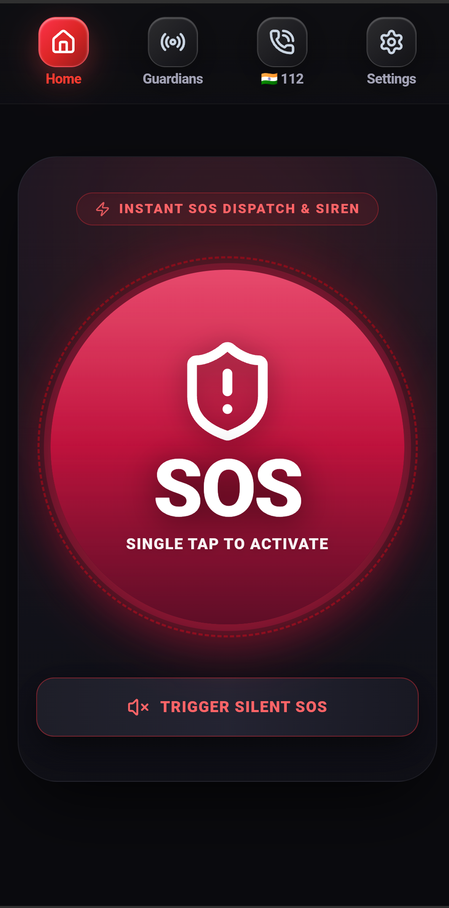

Your instant personal safety & emergency response network.
One tap fires a piercing siren, broadcasts your GPS coordinates to every guardian you've listed, and logs the incident — all from a phone that never phones home. No account, no cloud, no backend to trust.

Inside the app
Six real screens, straight from the production app — nothing recreated, nothing staged.
The Beacon
A single dashed ring, a single button. Tap once and SOS BEACONstarts dispatching immediately with high-contrast tactical visual feedback.
Broadcasting Live
Once triggered, the beacon stays visibly active until you double-tap to stand down, with persistent sirens, live GPS coordinates, and guardian transmission logs.
Guardians & Medical ID
Add the people who need to know the moment something happens — name, relationship, phone, WhatsApp and email in one encrypted local contact card.
Global Helplines
Police, medical, fire, disaster and women's helplines, filtered by category and matched to wherever you land across 30+ countries.
Emergency Profile & Controls
Personal details, hands-free shake and voice triggers, the siren oscillator, a custom SMS template, and hardware volume key bindings.
Fake Escape Call
A realistic incoming call — with a caller ID you choose, like "Mom" or "Police Control Room" — that gets you out of hostile or uncomfortable situations safely.
Four sirens, or total silence
Audition the real alarm synthesizer right now in your browser. Engineered to cut through engine noise, traffic, and high-stress environments.
Your local emergency number, wherever you land
SOS BEACONauto-detects the right number — 112, 911, 999, 100 — across 30+ countries. See the offline directory in action:
In the app, this switches automatically when your device latches onto local cell towers — no roaming data connection required.
Instant dispatch with text-to-911 support.
Everything the moment needs
Seven mission-critical systems work together the instant you press the beacon — sound, coordinates, medical records, and silent dispatch.
One tap dispatches everything
Press the center beacon and SOS BEACONfires an SMS broadcast to every guardian with an Apple/Google Maps link, opens WhatsApp with a pre-filled emergency payload, and starts your siren. No multi-step confirmations when seconds count.
Four sirens, or total silence
A Web Audio synthesizer drives four alarm profiles — Police Wail, Air Raid, Pulsing Alarm, Hi-Lo European — plus a Silent SOS mode that sends help with screen and speaker dark.
Coordinates, not guesses
Live GPS accuracy with reverse geocoding turns raw coordinates into a street address, and pins your location on an interactive satellite map before you even hit send.
Trigger it without touching your phone
Say a keyword — "Help," "Bachao" — and the beacon fires on voice command. A hard drop or sudden acceleration spike can arm the beacon hands-free.
First responders read this before you can speak
Blood group, severe allergies, chronic conditions and medications sit encrypted on your device and are included in the emergency dispatch payload automatically.
An exit, and a beacon in the dark
A realistic Fake Escape Call with a caller ID you choose gets you out of a room safely. A strobe screen beacon flashes bright white-red to guide rescue teams after dark.
Multi-lingual emergency assistance
SOS BEACONauto-detects local emergency frequencies, speaks 14 languages for international travelers, and operates smoothly in dead-zones with pure cellular SMS fallback.
Built for the moments that matter
Five situations, five ways the same beacon adapts to what you actually need.
Walking alone at night
A quick shake of the phone triggers a Fake Escape Call or a full Shake-to-SOS broadcast — no fumbling to unlock your phone first.
Medical emergencies & sudden collapse
The siren draws immediate bystander attention while Medical ID tells first responders your blood type and allergies before you can speak.
Harassment or hostile situations
Silent SOS notifies your guardians and logs your location without emitting sound or screen light, so a threat in the room never sees it happen.
Solo travel & hiking
Cross a border and the app switches to the local emergency number automatically, with a strobe beacon to help searchers find you in backcountry terrain.
Traffic accidents & breakdowns
One tap sends your exact coordinates to family, so they know precisely where to send emergency tow assistance or rescue teams.
Nothing leaves this phone.
Every guardian contact, Medical ID record, and location log lives in encrypted on-device storage. SOS Beacon has no backend, no analytics pipeline, and no account to create — because the safest server is the one that doesn't exist.
Questions, answered
The practical details of running a safety app with zero telemetry and no server.
How do I install the APK if it's not on the Play Store?
Download the signed APK from the official release link, open it from your file manager or browser downloads, and approve the "install unknown apps" prompt for that one source when Android asks. That permission applies only to the installer you used — it doesn't unlock sideloading system-wide.
Does SOS BEACONneed an active internet connection to work?
SMS-based dispatch runs directly over the cellular network and works even with mobile data switched completely off. WhatsApp and email dispatch, and reverse geocoding of your coordinates into a street address, utilize an active internet connection when available.
How do dispatch flows work without a centralized backend?
SOS BEACONhands each dispatch off to Android's native system intents — the SMS composer, WhatsApp, Google Maps, and your default email client — instead of routing sensitive data through a proprietary cloud server. The device itself performs all dispatch actions.
Why is the app completely free with no subscription?
Because there is zero backend server infrastructure to run, there are no recurring cloud costs to recoup. SOS BEACONis 100% — free for anyone, anywhere, forever.
Is any of my personal data ever sent to Trackizer or third parties?
No. Every guardian contact, Medical ID field, theme preference, and dispatch history log is written strictly to encrypted local storage on your device and never transmitted anywhere except the recipients you explicitly command.